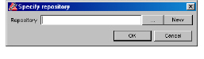

To start the administration client
1 On Windows, select Start > Program Files > DIScover > Administration Client.
On UNIX, type the following at a command prompt:
cie admingui
If you are starting the administration client for the first time, the Specify repository dialog box appears.

To create a repository, proceed to step 2 in Creating a Repository.
Note: The next time you start the administration client, the last opened repository automatically appears.